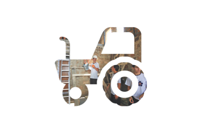
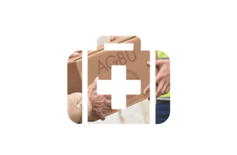
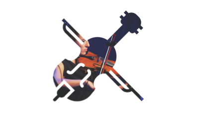
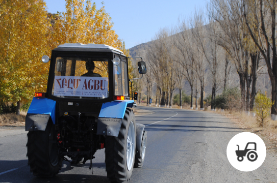
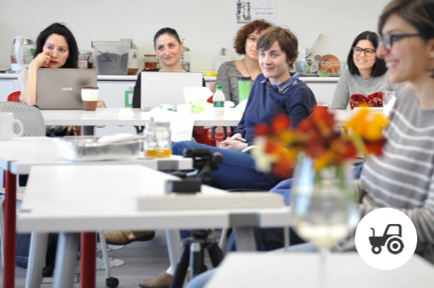
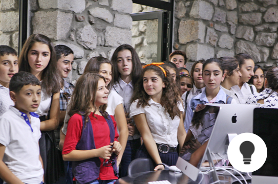
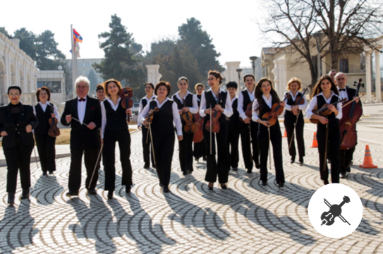
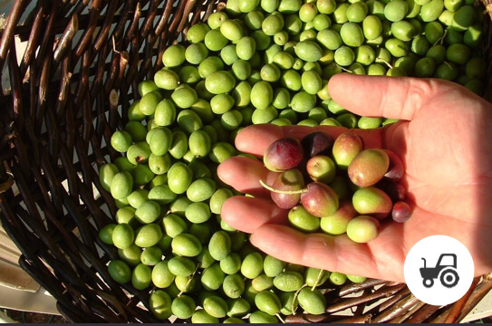
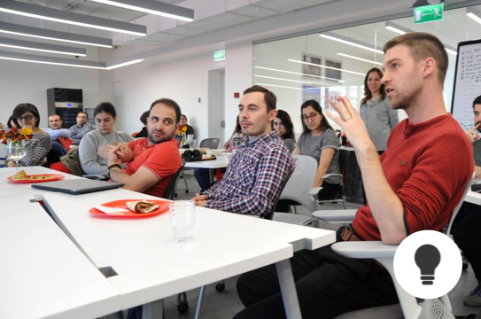

Winning the future with AGBU Fund for Artsakh
Time has shown that military victory without economic opportunity can only go so far
in winning the ultimate prize for the Republic of Artsakh: prosperity for the people
and peace in the region. That’s why AGBU’s commitment to this sacred land and its
people is centered around the AGBU Fund for Artsakh.
Sustained economic growth in Artsakh has unique advantages:
- Helps build a stronger military, which is essential for a safer society.
- Signals to the international community that Artsakh possesses the essential assets of a viable nation state.
- Allows the 150,000 people of Artsakh to live, work and raise families in their own community

Socio-Economic

Humanitarian
Education

Culture

AGBU Fields of Hope
Local farmers receive revolving loans for seeds sown on government-allotted lands, along with use of farming equipment and a storage facility.

AGBU Women’s Empowerment Program
A full year’s cycle of support for female entrepreneurs, including business training, mini-grants, expert advisors, mentors and networking opportunities.

TUMOxAGBU Artsakh
This afterschool program for creative technologies, which AGBU fully funds in Stepanakert, gives students a chance to catch up with peers in Armenia and abroad.Emergency Medical Support
AGBU has stepped up its medical relief efforts for those in harm’s way with ventilators for artificial respiration, digital X-ray machines and intensive care devices for air transport, etc.

Artsakh Chamber Orchestra
Since 2004, this 20-member orchestra has built a sterling reputation in the Caucasus, accepting concert engagements around the world and paving the way for a new music school in Artsakh.

AGBU Olive Tree Orchard Program
Artsakh’s climate and soil are ideal for these cold and drought-resistant trees which can thrive for hundreds of years and drive new markets for olive-based products. In the first year of this AGBU pilot program, farmers start out with 6400 young trees, enough to cover 16 hectares of land. Additional trees are added in subsequent years.AGBU Scholarship Program
Top performing students are awarded scholarships for undergraduate or graduate studies and can participate in the AGBU Summer Internship Program.
Enhanced Training for Military Personnel
AGBU offers scholarships for cadets and officers enrolled in leadership and English language courses through the AGBU- AUA Continuing Education Program.
